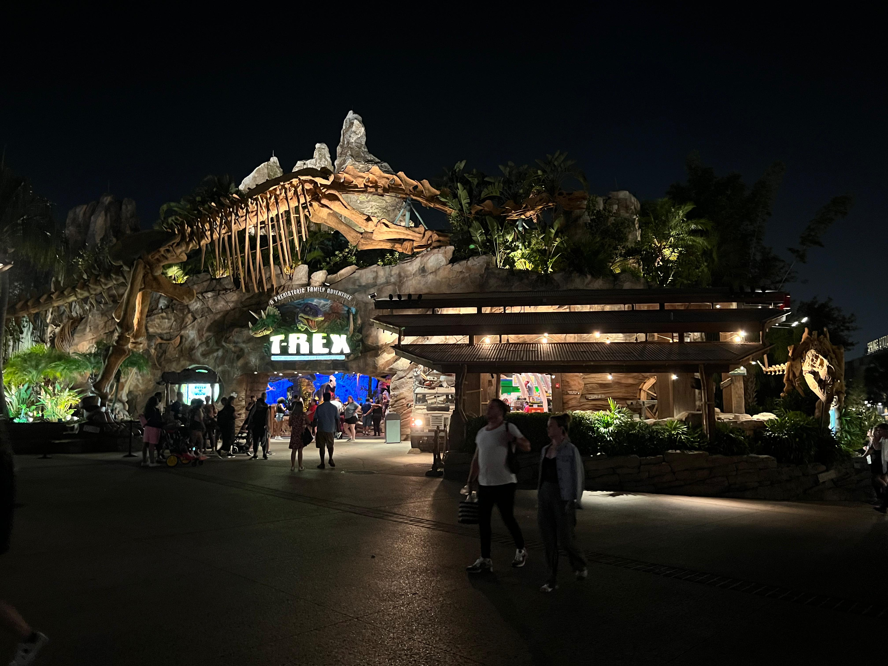
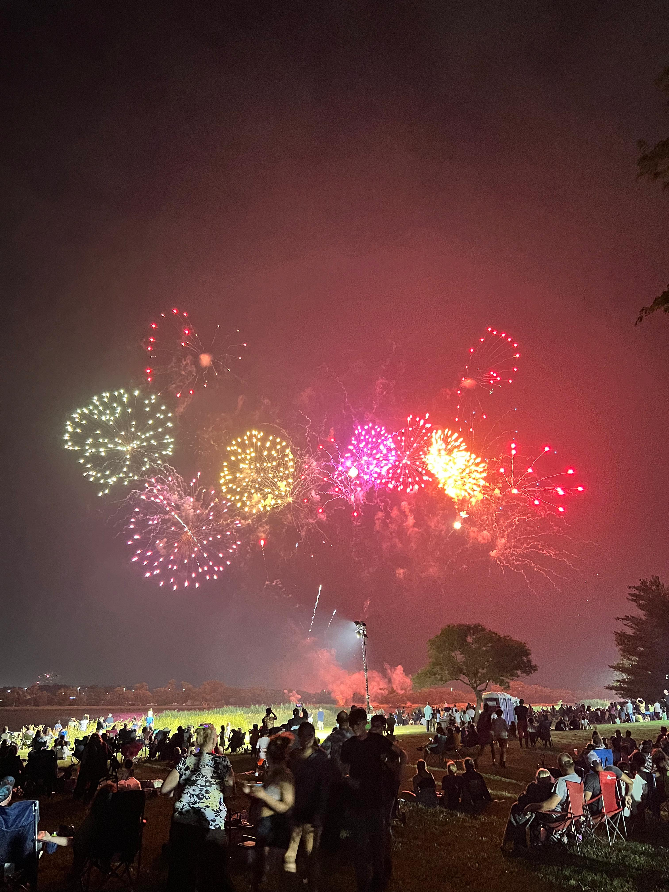
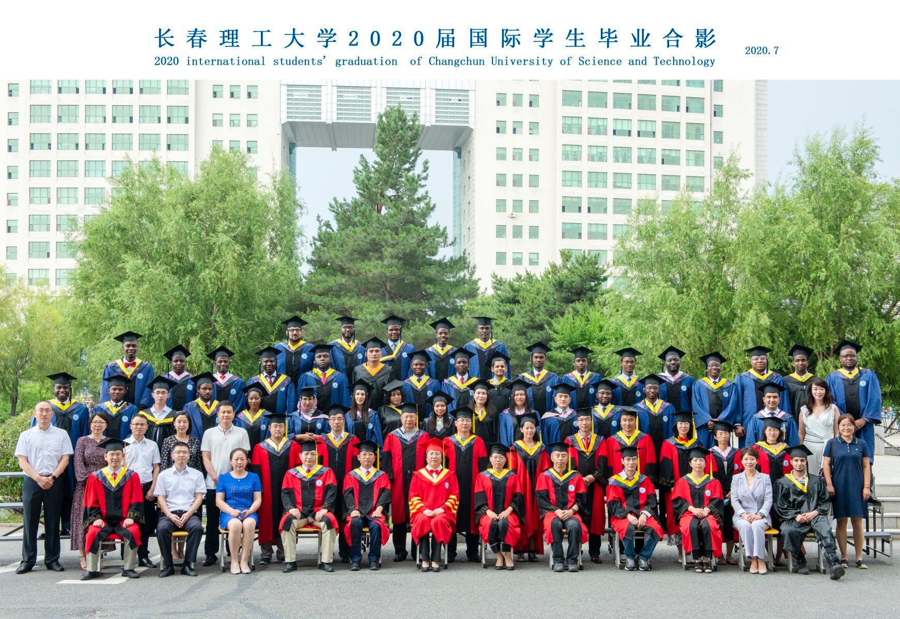
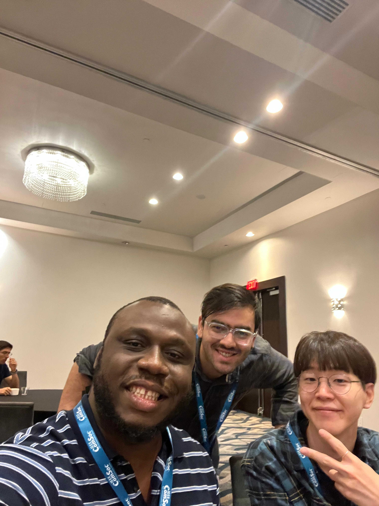
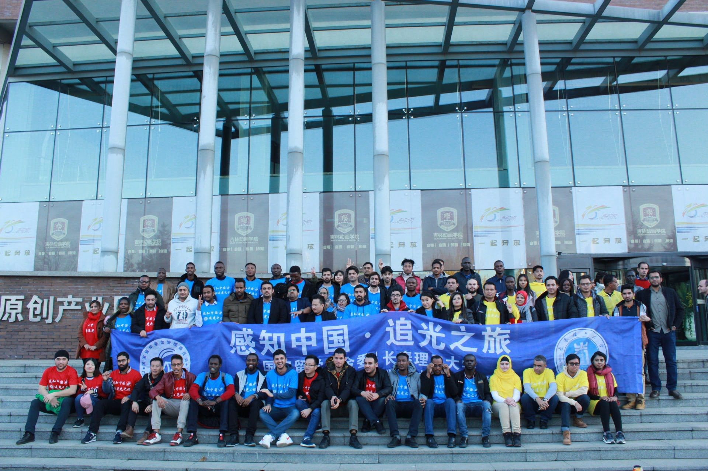
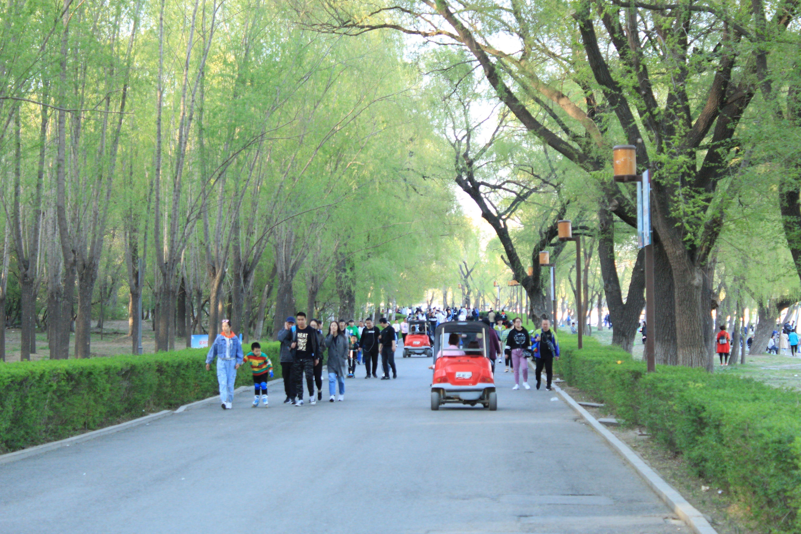
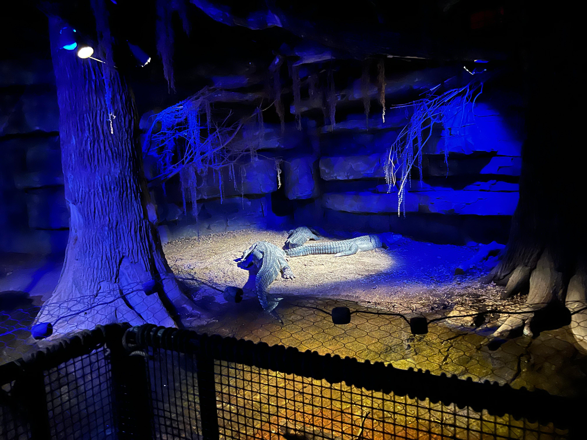
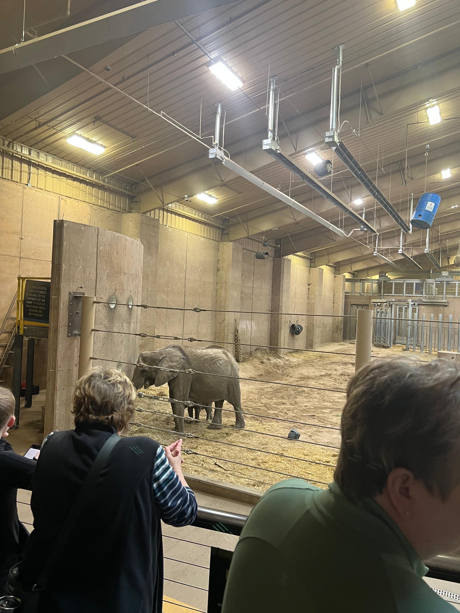

About Me
🎤 I am currently on the job market!
Here are my application materials:
Brief Bio
I am a Ph.D. graduate in Computer Science and Engineering from the University of Nebraska-Lincoln, advised by Prof. Nirnimesh Ghose (August 2025). My academic journey spans three continents: I received my M.S. in Computer Applied Technology from Changchun University of Science and Technology, China (2020), and my B.Eng in Electronic and Computer Engineering from Nnamdi Azikiwe University, Nigeria (2016).
Research Interests
My research secures the critical infrastructure of emerging wireless networks. I specialize in message integrity and authentication across diverse and challenging environments, including:
- Agricultural IoT (Underground sensor networks)
- Autonomous Vehicles (V2X security)
- Molecular Communication (Nano-scale security)
I combine machine learning with cryptographic protocols to build resilient systems that can withstand sophisticated adversarial attacks.
- School of Computing
- University of Nebraska - Lincoln
- Office: 114c Schorr Center
- oguchiebuka919@gmail.com
⚡ Latest News
Research & Publications
-
Ph.D. Dissertation:"Authentication and Message Integrity Verification for Emerging Wireless Networks", University of Nebraska-Lincoln, August 2025.
Download PDF Download Slides -
"STUN: Secret-Free Trust-Establishment for Underground Wireless Networks," in Proc. of IEEE INFOCOM Wrkshp on Wireless-Sec: 5G & Beyond Wireless Security, Virtual Event, May 2022.
PDF PPT -
"VET: Autonomous Vehicular Credential Verification using Trajectory and Motion Vectors," in Proc. of EAI International Conference on Security and Privacy in Communication Networks (EAI SecureComm 2023), Hong Kong, October 2023.
PDF PPT - "Soil Assisted Trust-Establishment For Underground Internet-of-Things," under review to IEEE Transactions on Network Science, February 2025.
- "Systematization of Knowledge for Security in Molecular and Nano-communications," under review to IEEE Transactions on Molecular, Biological, and Multi-Scale Communications, January 2025.
-
Poster: "STUN: Secret-Free Trust-Establishment for Underground Wireless Networks," Nebraska Research Days, March 2023.
View Poster -
Master's Thesis: "Smoke Recognition Algorithm Based on ResNet and GoogleNet Networks," Changchun University of Science and Technology, 2020.
Download Thesis
Research Projects
Agricultural IoT Security
Tackling the essential issue of building trust within agricultural IoT network applications. Strategies integrate physical layer features with cryptographic primitives. Funded by NSF under grants CNS-2331191, CNS-2225161, CNS-1619285, ECCS-2030272.
Autonomous Vehicle Security
Developing methods to prevent adversaries from seizing control of self-governing devices. We use trajectory and motion vector data to ensure message integrity and authentication. Funded by Nebraska Center for Energy Sciences Research (NCESR).
Radio Frequency Fingerprinting (On-going)
Research on fingerprinting in underground networks for message integrity verification using machine learning methods. Funded by NSF.
Molecular Communication Security (On-going)
Investigating lightweight approaches to secure communication between nanodevices in biological environments to prevent bootstrapping attacks. Funded by NSF.
Experience
Teaching
-
Teaching Assistant: Cryptography & Security (CSCE 477/877) - Fall 2022
Organized experiments, graded homework/labs, and supported students.
Download Syllabus Course Schedule
Industry
- Internship: Electronic Development Institute, Awka (2015). Projects involving remote control of home appliances using infrared sensors.
Mentorship
- Google CS Research Mentorship Program (CSRMP) - Recipient
- iAAMCS: The Institute for African American Mentoring in Computing Sciences
- Mentees: Mr. Hakim Lado (Ph.D. student) and Ms. Arielle Monson (Undergraduate).
Awards and Honors
- Ph.D. Dissertation Award (2025) - School of Computing, UNL
- Mary E. and Elmer H. Dohrmann Fellowship (2023) - UNL (1 of 6 recipients)
- Chinese Government Scholarship (2018) - Changchun University (1 of 500 global recipients)
- Microsoft Azure ML Scholar (Sept 2020)
Professional Service
- Conference Reviewer: EAI SecureComm (2024), ACM WiSec (2024)
- Journal Reviewer: IEEE Transactions on Industrial Informatics, ACM Transactions on Cyber-Physical Systems
- Judge: UNL College of Engineering Poster Fair (2024)
Certifications & Summer Schools
- Cybersecurity Incident Response Handler (U.S. Army, 2025) - View
- Cybersecurity Operational Training Experience (U.S. Army, 2025) - View
- Machine Learning Summer School (Oxford, 2022) - View
- Machine Learning Summer School (Indonesia, 2020) - View
- AWS Machine Learning Foundations (Udacity, 2020) - View
Resources
Conference Rankings
Writing Guides
Personal Projects
Photo Gallery

Disney Springs
Disney Bridge

4th of July, Lincoln

MSc Graduation, China
BSc Graduation, Nigeria

IEEE CNS Conference

Jilin Museum
Jilin Creative Park
Nan Hu Park

Nan Hu Park Tour

Omaha Zoo

Elephant at Zoo
Contact Me
I am available for interviews and research collaborations.
Email: oguchiebuka919@gmail.com